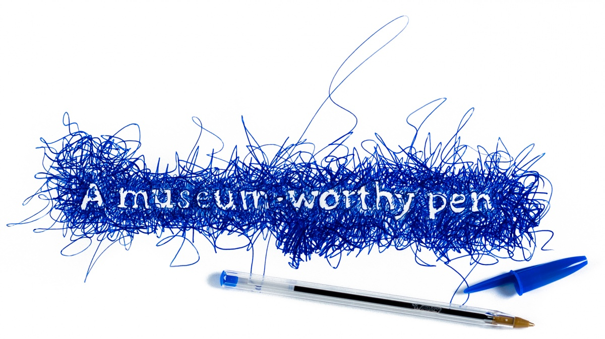
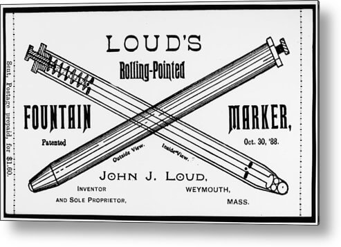
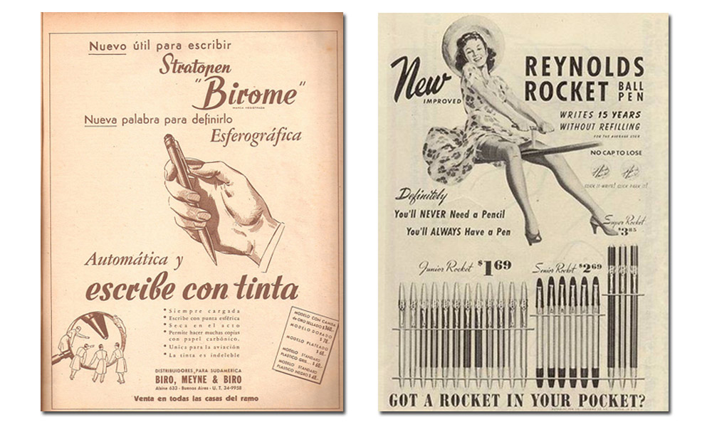
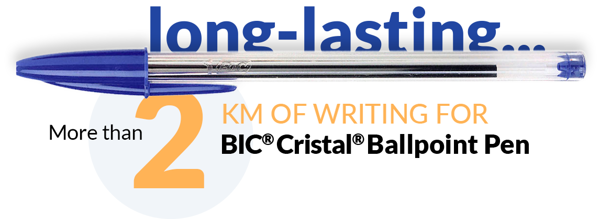
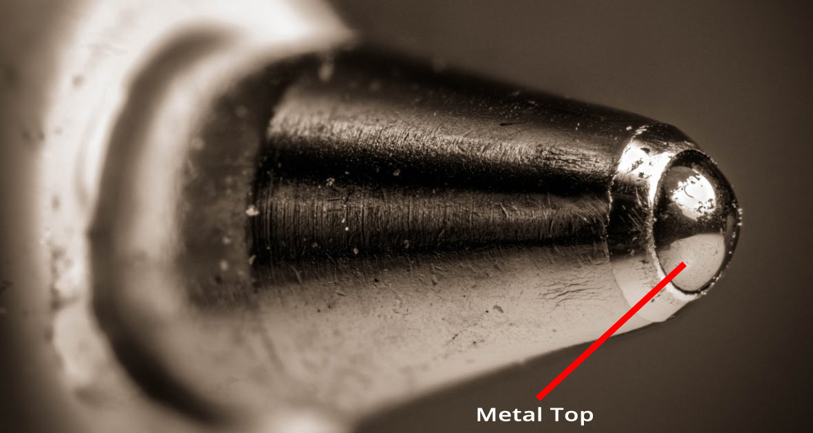
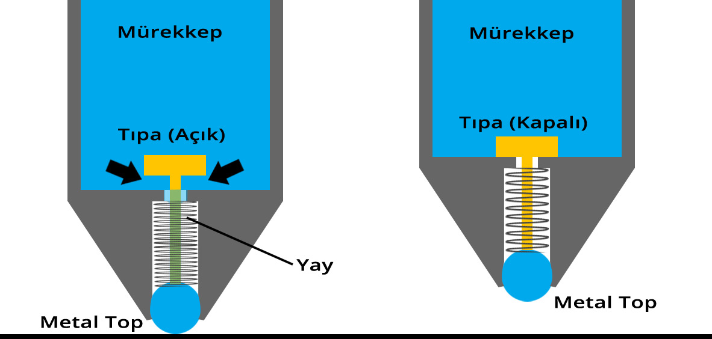
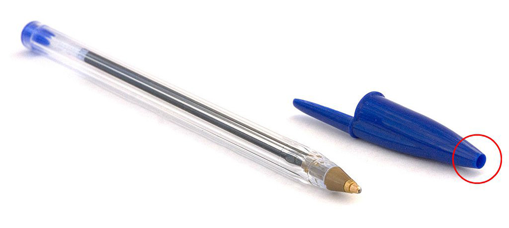
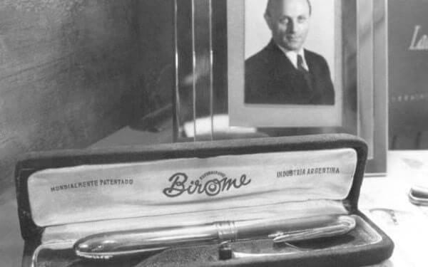
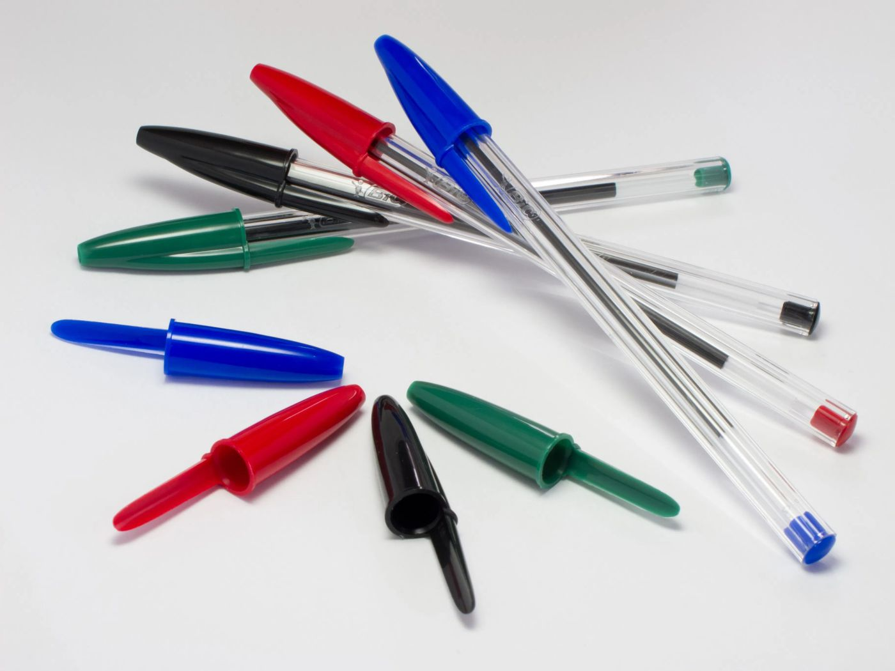
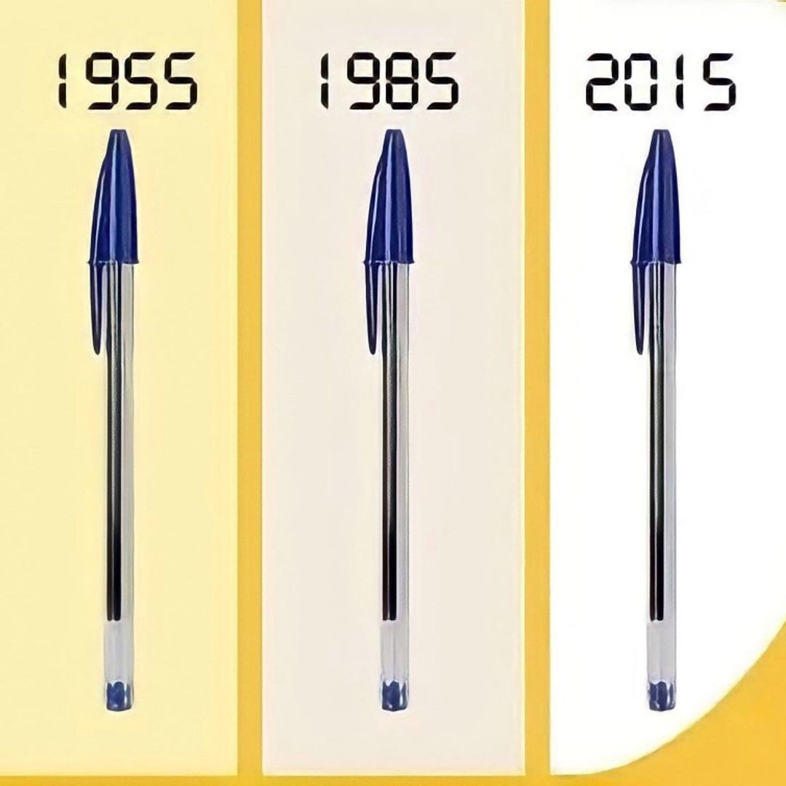

+++
title = "Değişmeyen Tek Şey: Bic Cristal Pen"
seotitle="Bic Cristal Pen Tasarım Tarihi"
description="BIC Cristal model tükenmez kalemi görmeyenimiz ya da kullanmayanımız yoktur. Tasarımıyla ikonikleşen bu kalemin hikayesi yeni sayımızda sizlerle."
url="sayi-6/ikonik-tasarimlar-tukenmez-kalem-bic-cristal"
aciklama="BIC Cristal model tükenmez kalemi görmeyenimiz ya da kullanmayanımız yoktur. Gündelik yaşamın ayrılmaz bir parçası olmuştur bu tükenmez kalem. Peki bu kadar göz önündeki bir kalemin bir tasarım klasiği olduğunu farkında mıyız?"
type="sayfa"
thumb="/img/bic-cristal-pen-thumbnail.jpg"
date = "2021-02-05"
sayi=["06"]
sayfa="05"
yazar=["zeynep dag"]
tags= ["anasayfa", "dergi", "ikonik"]
+++

<div class="container">
   <div class="text-center">
      {{}}
   </div>
   <small>illustrasyon: Krista Lahaye</small>
   <p>
      <strong>BIC® Cristal®</strong> model tükenmez kalemi görmeyenimiz ya da
      kullanmayanımız yoktur. Gündelik yaşamın ayrılmaz bir parçası olmuştur bu
      tükenmez kalem. Peki bu kadar göz önündeki bir kalemin bir tasarım klasiği
      olduğunu farkında mıyız? <strong>BIC Cristal,</strong> birçok kişi
      tarafından dünyadaki en önemli modern sanat müzesi olarak görülen New
      York’taki The Museum of Modern Art’ın (MoMa) kalıcı koleksiyonun bir
      parçası.
   </p>
   <p>
      <strong>The BIC Cristal</strong>, Fransa tarafından seri olarak üretilen
      ve satılan ucuz tek kullanımlık bir tükenmez kalemdir. Aralık 1950’de
      üretime başlayan bu kalem, Eylül 2006 yılına gelindiğinde satılan 100
      milyarıncı kalemiyle dünyanın en çok satan kalemidir.
   </p>
   <h1>Tükenmez Kalemin Kısa tarihi</h1>
   <h3><em>Ladislao Biro</em> Hakkında</h3>
   <p>
      1930’lu yıllarda Macaristan’da bir gazetede editörlük yapan
      <strong><em>Ladislao Biro</em></strong
      >, yazılarını yazarken kullandığı dolma kalemde sorunlar yaşıyordu. Dolma
      kalemin içine sıkışan mürekkep hızlı yazı yazmasını engelliyor ve yüzeyde
      de dağılma yapıyordu. Bundan rahatsızlık duyan
      <strong><em>Ladislao Biro</em></strong
      >, çözüm olarak hızlı kuruyan mürekkepler araştırmaya başladı. İlk olarak
      dolma kalem mürekkebinde özel bir anilin bileşimi kullanmayı denedi. Daha
      hızlı bir akış sağladı ama kağıtta dağılma yapmaya devam ediyordu. Eğer
      doğru mürekkebi bulur ve kalem için gerekli düzenlemeyi yapabilirse, dolma
      kalemden daha pratik bir yazı aracı geliştirmeyi planlıyordu.
   </p>

   <h3><em>Ladislao Biro</em> ve Tükenmez Kalemin İcadı</h3>
   <div class="row">
      <div class="col-md-6">
         <p>
            1930’lu yılların sonuna doğru
            <strong><em>Ladislao Biro,</em></strong> yazı araç gereçleri
            hakkında araştırmalar yapmaya başladı. Bu araştırmalar esnasında
            1888 yılında ABD’de <strong><em>John Loud</em></strong> tarafından
            patenti alınan mürekkepli kalemleri gördü. Deri tabakçısı olan
            <strong><em>Loud,</em></strong> hayvan derilerini işaretlemek için
            geliştirilen bu kalemlerin ucunda büyükçe bir bilye bulunuyordu.
            Bilye döndükçe üzerindeki mürekkeple birlikte deride işaretleme
            yapıyordu. Ne yazık ki sadece deri yüzeylerde işe yarıyordu, diğer
            yüzeylerde dağılma yapıyordu. Aynı zamanda sürekli dolum
            gerektiriyordu ve mürekkep sızdırıyordu. Bu nedenlerle
            <strong><em>John Loud</em></strong
            >, bu mürekkepli kalemi geliştirip bir ürüne dönüştürerek seri
            üretim yapmayı düşünmemişti. Fakat tükenmez kalemin icadında çok
            önemli bir adım atmıştı.
         </p>
         <p>
            <strong><em>Loud</em></strong
            >’un buluşundan etkilenen <strong><em>Ladislao Biro</em></strong
            >, bu tükenmez kalemi geliştirmeye karar verdi öncelikli olarak
            hızlı kuruyan bir mürekkep bulmaya girişti. Gazete matbaasında
            kullanılan mürekkep olumlu sonuç verdi. Mürekkep hem çabuk kuruyor
            hem de yüzeyde dağılma ve lekeleme yapmıyordu.
         </p>
      </div>
      <div class="col-md-6">
         {{}}
      </div>
   </div>

   <div class="row">
      <div class="col-md-6">
         <p>
            Mürekkep işini hallettikten sonra geriye kalan şey yeterince küçük
            ve işe yarar bilyeler yapmaktı.  Ve bu konuda yardımcısı kimyager
            kardeşi
            <strong><em>Georg Biro</em></strong
            >’ydu. <strong><em>Loud</em></strong
            >’un buluşunu geliştirmek ve daha akışkan bir mürekkeple sızdırma
            yapmayan ve taşınabilir bir kalem üretmek için birlikte çalışmaya
            başladılar. Tükenmez kalemin icadı işte bu çalışmalar sayesinde
            gerçekleşti.
         </p>
         <p>
            <strong><em>Biro Kardeşler</em></strong
            >’in yaptığı çalışmalar olumlu sonuç verdi ve tükenmez kalemi icat
            ettiler. Bu kalemlerde mürekkep, küçük bilyelerle bilye yuvasında
            bir araya geliyordu. Bilyenin dönüş hareketi, kalem içinde mürekkep
            akışının kontrol edilmesini sağlıyordu. Bu kalemin icadı kısaca, 360
            derece dönüş sağlayan bu bilye sayesinde oldu. Haznesinden gelen
            mürekkebi sürüklendiği yüzeye mükemmel bir şekilde bırakarak
            kesintisiz bir yazı ve çizim imkanı sunuyordu.  Hatta o kadar
            kesintisiz ki kaleme ismini verecek kadar
            <strong>‘Tükenmez Kalem’</strong>. Çizgi uzunluğu yaklaşık 2 km olan
            bu kalem ismini kesinlikle hak ettiğini söyleyebiliriz.
         </p>
      </div>
      <div class="col-md-6">
         {{}}
      </div>
   </div>

   <p>
      {{}}
   </p>
   <h3>Tükenmez Kalemlerin Çalışma Prensibi</h3>

   <div class="row">
      <div class="col-md-6">
         <p>
            Tükenmez kalemlerin çalışmasındaki en önemli 2 parça, kalemin ucunda
            yer alan metal top ve mürekkebin olduğu kartuş kısmının tasarımıdır.
         </p>
         <p>
            Metal top, pirinç, çelik veya tungsten &#39;den üretilir. Serbestçe
            dönebilen metal top hem yazmanın daha kolay olmasını sağlar hem de
            mürekkebin kurumasını engelleyen mekanizmada görev yapar. Kartuş
            kısmında, kalemin kullanılmadığı zamanlarda mürekkebin hava ile
            temas edip kurumasını engelleyen mekanizma bulunur.
         </p>
      </div>
      <div class="col-md-6">
         {{}}
         <p>
            Kalem topları, mükemmel şekilde küreseldir. Neredeyse bir elmastan
            daha serttir.
         </p>
      </div>
   </div>

   <div class="row">
      <div class="col-md-6">
         <p>
            Kalem ile yazılmaya başlandığında, metal topa yapılan baskı,
            kartuştaki kurumayı engelleyen mekanizmanın açılmasını ve az akışkan
            mürekkebin yer çekiminin etkisiyle metal topa ilerlemesini sağlar.
            Böylece metal topun yüzeyine ulaşan mürekkep, kağıda aktarılır.
            Yazma işleminin sonlandırılmasıyla, metal topa uygulanan baskı da
            ortadan kalkar. Mekanizmada bulunan yay sayesinde mürekkep ile metal
            top arasındaki kanal kapatılarak, mürekkebin hava ile teması
            kesilir. Bu sayede mürekkep kurumaz.
         </p>
         <p>
            Tükenmez kalemlerin plastik parçaları genellikle enjeksiyonlu
            kalıplama adı verilen bir işlem kullanılarak yapılır . Kalem
            şeklindeki bir kalıba sıcak sıvı plastik &quot;enjekte edilir&quot;.
            Plastik soğuduğunda ve sertleştikten sonra kalıp çıkarılır.
         </p>
         <p>
            Tükenmez kalemlerin kapakların bulunan delikli yapı da boğulmalara
            karşı alınmış bir önlemdir. Raporlara göre, Amerika&#39;da her yıl
            ortalama 100 kişi kalem kapaklarının soluk borusuna kaçması yüzünden
            boğularak hayatını kaybetmektedir. Bunu engellemek için üretici
            firmalar delikli kapak üretimine geçmiştir.
         </p>
      </div>
      <div class="col-md-6">
         <p>
            {{}}
         </p>
         <p>
            {{}}
         </p>
      </div>
   </div>
   <hr >
   <h3><em>Biro Kardeşler</em> ve Arjantin Yolculuğu</h3>
   <div class="row">
      <div class="col-md-6">
         <p>
            <strong><em>Ladislao Biro</em></strong> geliştirdiği tükenmez
            kalemin prototipini patentini 1938 yılında aldı. O dönemlerde
            gazetedeki editörlük görevini sürdürmekteydi. Muhabirlik yaptığı
            sıralarda bazı notlarını bu kalemle alıyordu. Yine bir gün
            muhabirlik yaptığı bir ortamda Arjantin Devlet Başkanı
            <strong><em>Agustin Pedro Justo</em></strong
            >, <strong><em>Biro</em></strong
            >’nun kullandığı bu kalemi fark etti. Yeni icatlara meraklı bir
            asker ve devlet adamı olan <strong><em>Justo</em></strong
            >, bu kalemi hayranlıkla inceledi.
            <strong><em>Justo</em></strong> için bu tükenmez kalem hem büyük bir
            buluş hem de büyük bir ticari fırsattı. Bu kalemi geliştirip bir
            ürüne dönüştürerek piyasaya sunmak için
            <strong><em>Biro</em></strong
            >’yu Arjantin’e davet etti.
         </p>
         <p>
            1941 yılında <strong><em>Ladislao</em></strong> ve
            <strong><em>Georg Biro</em></strong
            >, Macaristan’daki Nazi katliamlarından kurtulmayı başararak
            Arjantin’e geldiler. Tükenmez kalem icadı sonrasında bu kalemlerin
            bir ürüne dönüştürülerek piyasaya sunulmasına yardımcı olan
            <strong><em>Agustin Pedro Justo</em></strong
            >, dünyanın ilk tükenmez kalem fabrikasını Arjantin’de kurulması
            için gerekli talimatları verdi. 1943 yılında
            <strong><em>Ladislao Biro</em></strong
            >, tükenmez kalemlerin patentini Arjantin’de tescil ettirdi. Bu
            ürünlerin seri üretimi ve satışını yapmak için
            <strong><em>Ladislao Biro</em></strong
            >, kendi şirketini kurdu. <strong>Birome</strong> ismiyle piyasaya
            sunulan bu ürünler dolma kalemlere kıyasla daha ucuz ve kullanışlı
            ürünler olarak kısa sürede popülerleştiler.
         </p>
         <p>
            Ürünlerin Arjantin pazarında gördüğü büyük ilgi ABD pazarına
            açılmaları konusunda
            <strong><em>Biro kardeşleri</em></strong> cesaretlendirdi. Tükenmez
            kalemin icadı sonrasında bu yeni yazı aracını ABD pazarına taşıyan
            kişi <strong><em>Milton Reynolds</em></strong
            >’du.
         </p>
      </div>
      <div class="col-md-6">
         {{}}
      </div>
   </div>

   <hr >
   <h3>Birome Tükenmez Kalemleri ve Bic®</h3>
   <div class="row">
      <div class="col-md-6">
         <p>
            <strong>Birome</strong> tükenmez kalemleri, 1940’ların sonlarına
            doğru ABD pazarında çok büyük talep gördü özellikle de Amerikan Hava
            Kuvvetleri askerleri arasında. Çünkü yerden 3 bin metre yükseklikte
            diğer mürekkepli kalemlerde sızma oluyordu. Tükenmez kalemlerin
            icadı bu sorunu kökünden çözdü.
         </p>
         <p>
            Ne var ki <strong><em>Biro kardeşler</em></strong
            >, tükenmez kalemler için artan bu yoğun talebi karşılamakta
            zorlanmaya başladılar. Tükenmez kalemin icadında büyük başarı
            gösteren <strong><em>Biro kardeşler</em></strong
            >, şirket yönetimi konusunda birçok sorun yaşadılar. Bunun üzerine
            <strong>Birome</strong>, tükenmez kalemlerin imalat haklarını 1950
            yılında <strong><em>Marcel Bich</em></strong
            >’e ait Fransız şirketi <strong>BIC</strong>’e satmaya karar verdi.
         </p>
         <p>
            Bu satın alma işlemiyle birlikte <strong>BIC</strong>, dünya yazı
            araç ve gereç pazarında çok önemli bir stratejik üstünlük elde etti.
            <strong>Birome</strong> tükenmez kalemlerini daha da geliştiren
            <strong>BIC</strong>, ürünü sekiz parçaya bölerek üretim maliyetinde
            ciddi bir azalma sağladı. Tükenmez kalemin icadı sonrasında bu
            ürünlerin tutuşunu kolaylaştıran da yine <strong>BIC</strong> oldu.
         </p>
         <p>
            Kısa süre içinde <strong>BIC</strong>’in cirosunda yüksek bir hacme
            ulaşan bu ürünler, <strong>BIC</strong>’in dünyanın en büyük kalem
            üreticilerinden biri haline getirdi.
         </p>
         <iframe
            width="100%"
            height="315"
            src="https://www.youtube.com/embed/-OxsoPxc8SY"
            frameborder="0"
            allow="accelerometer; autoplay; clipboard-write; encrypted-media; gyroscope; picture-in-picture"
            allowfullscreen
         ></iframe>
      </div>
      <div class="col-md-6">
         {{}}
         <br ><br >
         {{}}
      </div>
   </div>


   <blockquote>
      <p>
         &#39;&#39;İyi tasarım mümkün olduğunca az tasarımdır.&#39;&#39;
         -<strong><em>Dieter Rams</em></strong>
      </p>
   </blockquote>

   <button
class="btn markutbtn"
data-target="#my-collapse"
data-toggle="collapse"
aria-expanded="false"
aria-controls="my-collapse"
>
Kaynaklar
</button>
<div id="my-collapse" class="collapse">
<pre> <small><code>  

    - https://blog.ofix.com/ladislao-biro-ve-tukenmez-kalemin-icadi/
   
    - https://en.wikipedia.org/wiki/Bic_Cristal
   
    - https://www.mosa.com/en/inspiration/notes/spring-2019/bic-cristal
   
    - https://designmuseum.org/discover-design/all-design-objects/bic-biro
   
    - https://www.sihirlifasulyeler.com/teknoloji/tukenmez-kalem-nasil-calisir
   
    - https://www.bicworld.com/en/about-us/who-we-are    
  </code></small></pre>
</div>
</div>
